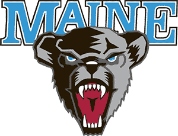

MaineUpcoming schedule
Win probability from ELO.
- 2026-10-09 · @ Minnesota — win prob 24%
- 2026-10-10 · vs Bemidji State — win prob 59%
- 2026-10-16 · @ RPI — win prob 50%
- 2026-10-17 · @ RPI — win prob 50%
- 2026-10-30 · vs Providence — win prob 55%
- 2026-10-31 · vs Providence — win prob 55%
- 2026-11-06 · @ Boston University — win prob 41%
- 2026-11-07 · @ Boston University — win prob 41%
- 2026-11-13 · vs Holy Cross — win prob 48%
- 2026-11-14 · vs Holy Cross — win prob 48%
- 2026-11-19 · @ Northeastern — win prob 27%
- 2026-11-20 · @ Northeastern — win prob 27%
- 2026-12-04 · vs New Hampshire — win prob 49%
- 2026-12-05 · vs New Hampshire — win prob 49%
- 2027-01-01 · @ Dartmouth — win prob 36%
Season overview
- Games played: 4
- Win%: 0.250
- Strength of schedule: 0.0
Massey
Biggest wins (leave-one-out)
- 2026-10-01 · St. Lawrence — impact +0.3
Biggest losses (leave-one-out)
- 2026-10-02 · St. Lawrence — impact -0.6
- 2026-09-26 · Quinnipiac — impact -0.2
- 2026-09-25 · Quinnipiac — impact +0.3
Projected finish
HockeyBT
Biggest wins (leave-one-out)
- 2026-10-01 · St. Lawrence — impact +11.5
Biggest losses (leave-one-out)
- 2026-10-02 · St. Lawrence — impact -15.5
- 2026-09-26 · Quinnipiac — impact -4.8
- 2026-09-25 · Quinnipiac — impact -4.8
Projected finish
KRACH
Biggest wins (leave-one-out)
- 2026-10-01 · St. Lawrence — impact -0.0
Biggest losses (leave-one-out)
- 2026-10-02 · St. Lawrence — impact -0.0
- 2026-09-25 · Quinnipiac — impact +0.0
- 2026-09-26 · Quinnipiac — impact +0.0
Projected finish
ELO
Biggest wins (leave-one-out)
- 2026-10-01 · St. Lawrence — impact +5.2
Biggest losses (leave-one-out)
- 2026-10-02 · St. Lawrence — impact -16.9
- 2026-09-26 · Quinnipiac — impact -14.4
- 2026-09-25 · Quinnipiac — impact -6.9
Projected finish
RPI
Biggest wins (leave-one-out)
- 2026-10-01 · St. Lawrence — impact +0.0
Biggest losses (leave-one-out)
- 2026-10-02 · St. Lawrence — impact -0.1
- 2026-09-25 · Quinnipiac — impact +0.0
- 2026-09-26 · Quinnipiac — impact +0.0
Projected finish
NPI
Biggest wins (leave-one-out)
- 2026-10-01 · St. Lawrence — impact +4.6
Biggest losses (leave-one-out)
- 2026-10-02 · St. Lawrence — impact -3.5
- 2026-09-25 · Quinnipiac — impact -0.5
- 2026-09-26 · Quinnipiac — impact -0.5